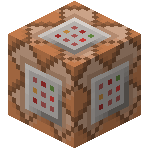

“安那其”
Anarchism Project
前言
天行有常，不为尧存，不为桀亡
之所以选用“安那其”这个名字来命名这个项目，是为了凸显其荒诞性以及基于形式的反讽。名曰“无政府主义”，本计划是行其名，实际上却反其道而行之。“天行有常，不为尧存，不为桀亡。”两千年前荀子的箴言便窥测了近万年的人类社会发展历史。从文明伊始到原子能时代，人类社会随着物质文明的发展而不断进步着，社会的形态也从未停止过变化。侵略战争、商业贸易、政治联姻……各种方式，或悲剧或繁荣，人类在自发的利己心中走向融合、发展……探求人类行为在不同形式中的社会性发展，便是本项目的初衷。
国家将被建立，历史将被书写，人们将进入设定后的世界，或停滞、或发展，或战争、或和平。可能国王在宝座上加冕，可能内阁提前大选。政客们在勾心斗角之时，人们用自己的双手创造了整个世界。商品、货币，经济、法律，这些概念将被加入进模拟的世界，人类的历史将会重新演变。对于争强好斗的，参加战争或许是最好的选择；与世无争的，赋闲农桑或许是不错的想法；想一展宏图的，政治是永恒的舞台；想一夜暴富的，市场是金钱的来源。
尽管计划尚在擘划，系统仍在搭建，但是本文可以管中窥豹、见微知著。
为什么是Minecraft

Minecraft作为当今拥有玩家数量最多的游戏之一，其强大的社交功能和前所未有的自由世界让人们能够静下来欣赏其特有的像素风格风景以及建筑。自由程度空前绝后，而其中构建出的游戏难度却是老少咸宜。没有人不会玩Minecraft，因为它就像三岁小孩搭建积木一样容易。直观的游玩方式、无所拘束的操作行为和接近为零的学习成本，导致参与Minecraft的人们能够以最贴近起生活思维的活动行为在虚拟世界中进行交互。
其强大的可扩展性能也是选择它的重要因素之一。Minecraft客户端以及服务端是以目前较为热门的计算机语言——java——编写，来自官方对第三方二次开发的支持也促使Minecraft社区充满了游戏与技术的探讨，将看起来简单的世界变得硬核、变得复杂。
社会形态与国家形式

社会形态是社会生产力发展到一定程度时经济基础和上层建筑的统一体。根据观察显而易见，Minecraft的生产力仅仅局限在工业时代。尽管引入了红石电路，但是电路所占据的夸张的体积以及消耗计算机的资源，难以使其真正变成信息时代的产物。除此之外，Minecraft中最为先进的并且易于使用则为铁路系统，其发展时代也正对应着第一次工业革命之后、第二次工业革命前夕。由此可以推断，在现代化信息技术缺乏、大众传媒仍未真正兴起（Minecraft印刷业的不足）的情况下，Minecraft在自然条件下所能形成的社会形态是资本主义社会。一般情况下会止步在封建主义末期资产阶级新型贵族夺取权力的前夜。除非封建势力停止扩张，使资产阶级逐渐积累可以与之抗衡的实力。如是发展，在经过资产阶级革命后，议会制民主共和制的政体会趋于稳定，Minecraft的社会形态达到了最高峰。除非引入新技术，否则以当前生产力难以满足社会发展的需要。当然这是基于资源有限或者人口无限增殖的假设之上。在实际操作上，Minecraft世界默认无限扩展，服务器世界有界但几乎无限。所以能够更加拟合现实世界发展，“安那其”会尝试有界限制，迫使产生技术革新的意愿。
“安那其”原则上不对社会形态和国家形态设限，但是社会形态会跟随着生产力发展的变化而发展，国家形态会随着社会形态的变化而趋于适应。为了给予参与者在制度上的公平，所有初始国度的国家形式均为议会制民主共和制的单一制国家，即一套法律体系、一部宪法、一个中央政权、公民只有一个国籍，最高权力机关的组成人员由民众选举产生、最高领导人对议会负责。设定模版的政权组织形式特点类似于英国议会制度：议会多数党领袖成为首相，首相需组建内阁、任命大臣（部长），首相集党政军财大权于一身，议会具有立法权。每个国家的玩家高层，在得到全体高层人员三分之二（不足一向上取整）同意后，可以更改、更换结构形式和政权组织形式，形成独特的国家形式。
契约系统

契约系统是为描述文字与行动之间关系以及可预见后果的公文系统。所谓契约系统构思灵感来自于卢梭的《社会契约论》的观点：“人生而自由与平等，人们通过订立契约来建立国家，国家就是人民契约的结合体。”尽管卢梭的观点具有一定的局限性，无法从根本上解释一系列社会问题，但是为我们概括一系列社会活动提供了一种思路。行为契约化，需要契约双方对契约内容进行承诺且确保能够在违约的条件下违约方执行违约办法。
口头契约
口头契约是最为广泛且最为常用的一种形式，是自然人对另一自然人以一定条件对可预见的后果进行承诺。由于口头契约形式多种多样、内容也无法穷尽且难以追踪。所有口头契约不具有强制约束力也不能作为其他契约的客观依据。
政治契约
政治契约，即签订者双方以政治概念为契约对象而签订的合约，包括但不限于政治允诺、政治行为和政治权利。例如，当政府对任何除自身外的法律实体（民众、企业、其他国家机关）进行对未来行为所产生的影响的许可或承诺而缔结的契约，政府有义务向所承诺对象兑现所承诺的必要行为活动或结果；当权力机关为自己政治行为（修改宪法、制定法律、动用军队）进行辩护或解释的时候，权力机关自动与辩护或解释的对象缔结契约，权力机关有义务向其所辩护或解释的对象提供正确无误的（但不一定完整的）信息；当宪法规定公民所享有的政治权利以及国家机关享有的公权力时，宪法向公民和国家机关同时缔结了有关公民政治权利和公权力的契约，宪法的执行机关有义务保障公民和国家机关合法的政治权利和公权力。如果一政治实体无法履行其签订的契约，那么其政治公信力将会下降，影响其有关政治公信力的参数指标，进而降低其所在国家的综合参数指标。
法律契约
法律契约，即国家权力机关与公民签订的具有强制约束力的合约。强制约束力，即如果违反契约内容，那么将通过强制手段使被约束方履行违约办法。由于Minecraft只存在生刑不严格存在死刑，而且所有强制约束力的执行效率几乎为100%，所以违约办法只存在两种形式：一、剥夺违约人原本拥有的权利；二、剥夺自由身，即进行监禁。
法律契约可以看为国家意志，即所有法律契约所描绘的法律场景和法律含义是政治意识形态、权力意志和公民意志的总和。国家宪法是法律契约签订的根本准则。
法律契约和宪法的执行机关是国家司法机关，法律契约和宪法的监督机关是检察机关或者权力机关。有关机关对法律契约的履行状况影响国家的法治参数指标。法律实体包括：自然人(玩家)、企业、社会组织(社团)、国家机关。
经济契约
经济契约，即伴随货币流动，货币汇出方与货币汇入方之间关于货币用途所签订的契约。货币的用途包括但不限于：作为一般等价物进行商品交换（买卖）、作为生产资料进行资本周转（货币资本）、作为债务执行的支付手段（薪资偿还）、作为商品价格的价值尺度（标价）、作为金融市场的委托资产（储蓄）、作为对承诺的预付金（期货）。合法的经济契约受到法律的保护，此时的经济契约继承相关法律契约的内容，在经济纠纷中，经济-法律嵌合契约同样由国家司法机关执行。如果货币流动双方有一方违约，那么司法机关会强制要求违约方对另一方执行经济契约的违约办法，并且如果违反了与该经济契约嵌合的法律契约，那么司法机关会对违约方发起公诉强制要求执行法律契约的违约办法。由于基于市场的经济行为具有原子性和程序性不存在外部因素干预和风险，所以能够与法律契约嵌合的经济契约，基本是口头契约的衍生。如果双方进行的经济行为希望受到法律的保护需要将口头契约文字化并且契约化。经济契约的参数指标不由契约本身的执行与否决定，而是以国家整体经济水平决定。
 战争契约
战争契约
战争契约，即战胜方对战败方或者非交战国之间的签署的具有法律契约效益的政治契约，并且可以同时包括经济契约。战争契约的法律效益对所有缔约国都有约束力，如果一方不履行契约，则视为违约，国家综合参数指标和法治参数指标以及其他指标都会有所降低，并且可能还会引发其他国家的不满以及行动。
经济系统
经济系统是以经济契约为基础的，用于资源配置的公文、程序系统。公文作为经济制度、经济契约以及相关法律契约的载体，程序则作为组成经济行为的原子操作，即不可再细分。经济系统依靠法律契约的强制约束力以及具有原子性的交易程序得以实行，且原子性交易均会记录。
原始的物物交换
物物交换起源于原始社会对分工的探索。由于商品在时空上的稀缺性导致人们产生了对交换的需求，而人具有对具体事物对于自身的价值进行抽象的能力导致了物物交换的实质性的发生。这时，在人脑海中的所谓“对自身的价值的抽象”是商品的使用价值，价格则是物物交换间使用价值的兑换比率。价值的产生，在于商品生产的过程中，个体在生产商品中所耗费的时间是生产该商品的成本，而社会在生产商品中所耗费的时间凝结成了该商品的价值。也就是说，人在对商品进行生产的过程中所投入的具体的劳动，凝结成了商品的使用价值；而人在对商品进行生产的过程中所投入的抽象的劳动，则凝结成了商品的价值。由此，我们可以说：商品是物物交换中产生的、同时凝结着使用价值和价值的物。
物物交换的频繁促使了人们对于一般等价物的需求。人们希望有一种特定的物品能够代表其他商品的价值。于是，一种商品从商品世界脱离出来，固定充当一般等价物，于是便形成了货币。
物物交换的繁荣和一般等价物——货币的出现，使得人们从口头契约发展成为了较为固定的经济契约。人们把用货币对另一商品的交换固定称为“买卖”或者“交易”。也就是说，在货币形成之后，交易行为不断发展的同时，以经济契约为基础的原始市场逐渐成型，所有制的概念也慢慢地从普遍含以上的对物品的占有权变为一种对价值也就是劳动的占有。
市场系统
市场在一般等价物的成熟后开始成形。市场是一切经济契约活动的综合，是对整个社会资源配置的决定性因素。商品在市场上的重要表现形式是价格，价格是市场消费者对于商品真实价值的一种估计，是消费者对使用价值的一种反应。人们对一种商品价值的期望时常会影响到其表现出来的价格，而真正决定价格的是商品所具有的价值。在市场上销售的商品满足一定客观规律，即价值决定价格、价格受供求关系影响围绕价值波动，生活必需品的需求受价格变动较小、高端耐用品受价格变动较大，具有替代、竞争关系的商品的需求量常此消彼长、具有互补关系的商品需求量常同增同减。
人们可以自由地加入市场成为消费者或者生产者。消费者向生产者购买过程中所缔结的契约叫做需求契约，生产者向消费者提供商品过程中所缔结的契约叫做供给契约。供给契约和需求契约在交易完成后自动勾销。供给契约的总和是市场总供给，而需求契约的总和是市场总需求。市场总供给的均值就是供给契约的价值，市场总需求的均值是需求契约的价值。所以交易行为所产生的经济契约是供给契约和需求契约的统一体，交易行为所产生的利润:
利润归生产者所有。由法律实体构成的以赚取利润(profit)为目的的有组织进行生产的社会组织被称为企业，企业也是法律实体。